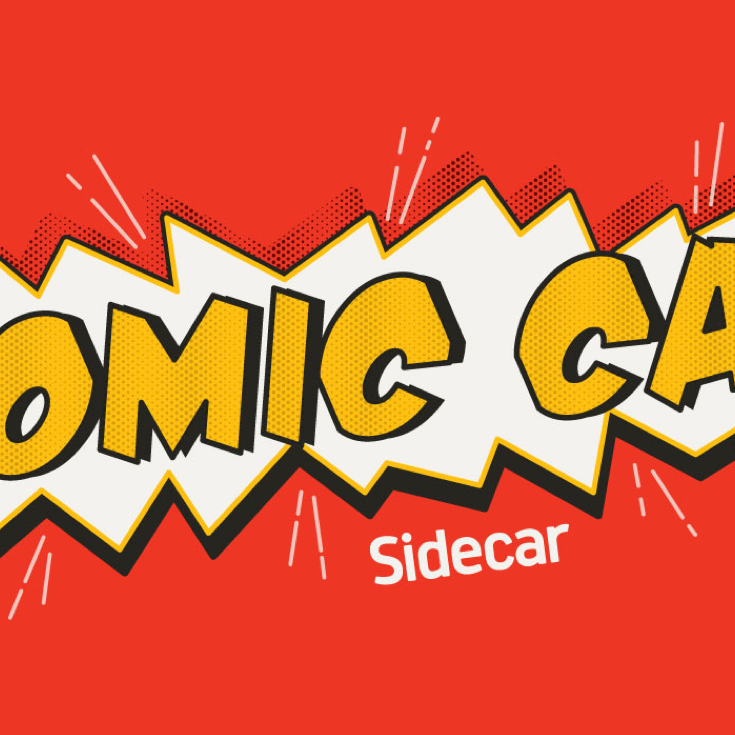
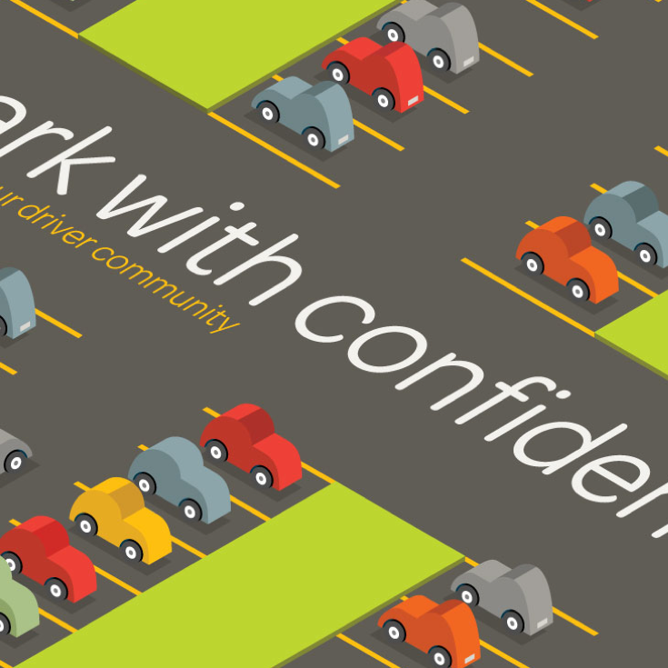
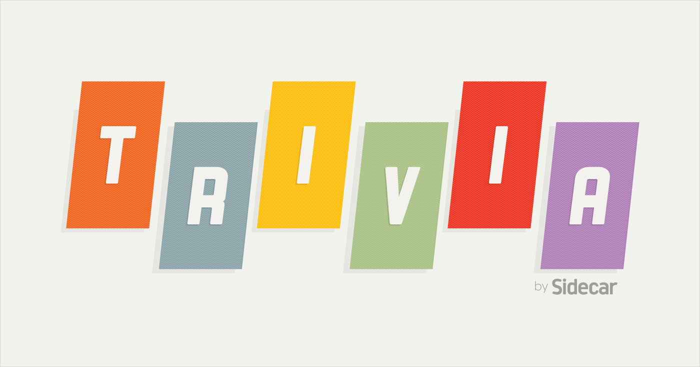

As a Product Designer, my role oscillates between graphic design, user research, and interaction design. Through a combination of the aforementioned facets along with personal approaches, I aim to craft experiences that are delightfully helpful.


